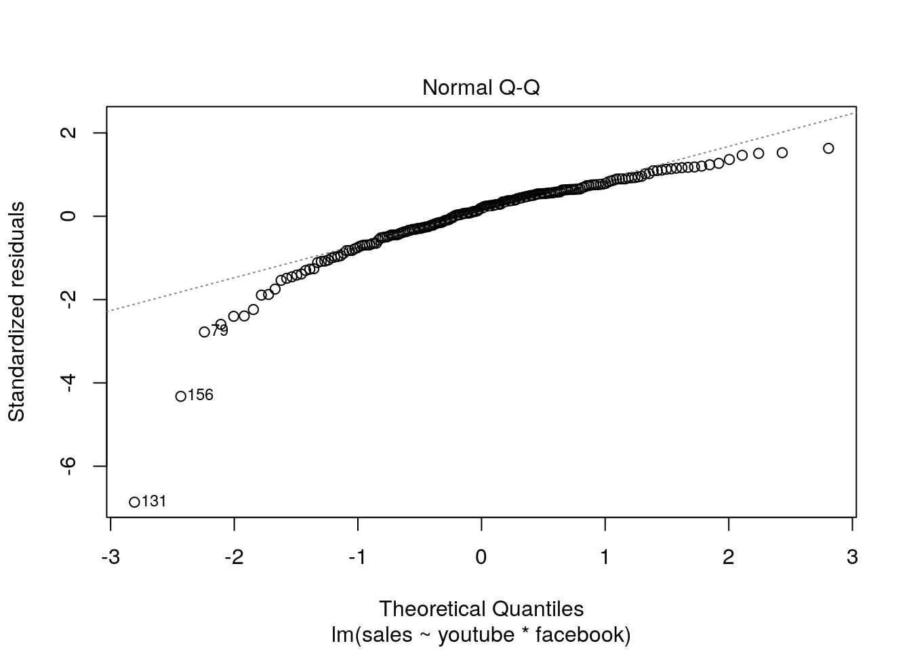
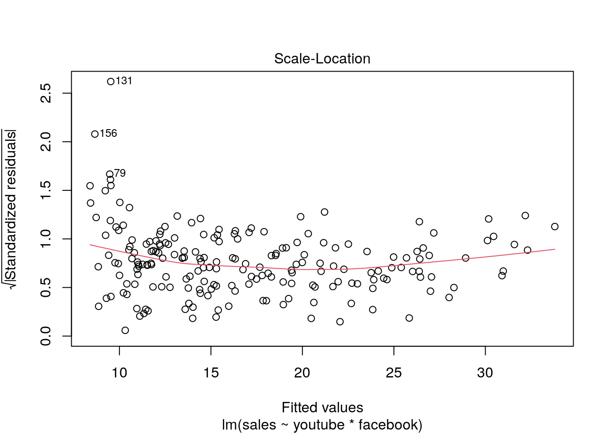
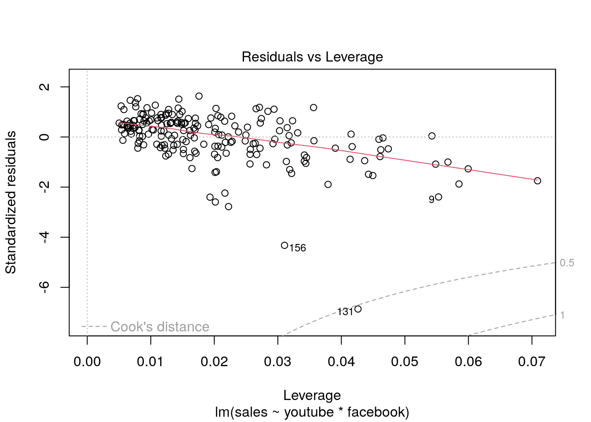
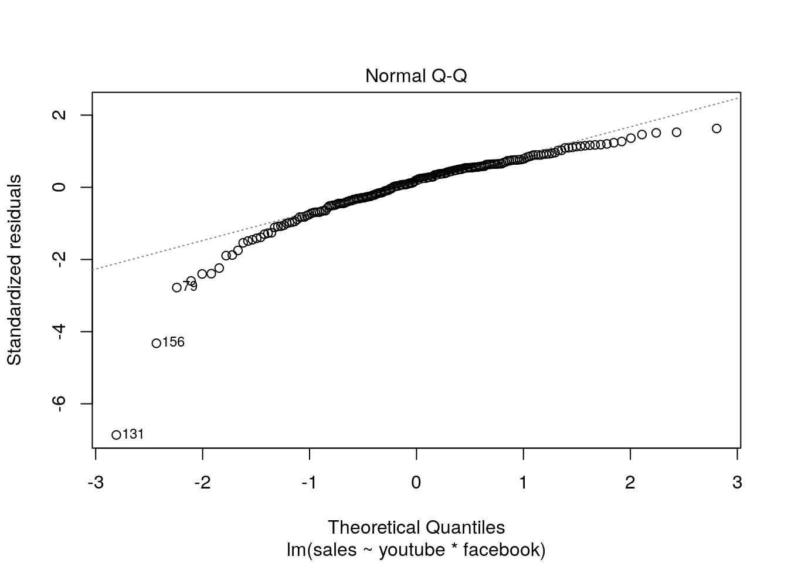
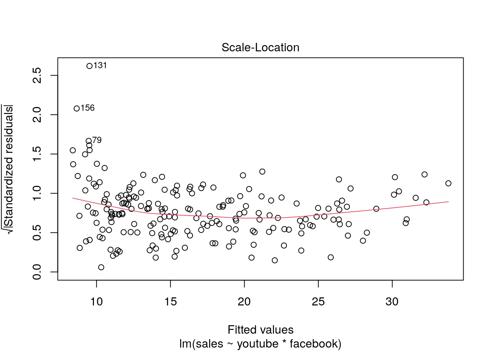
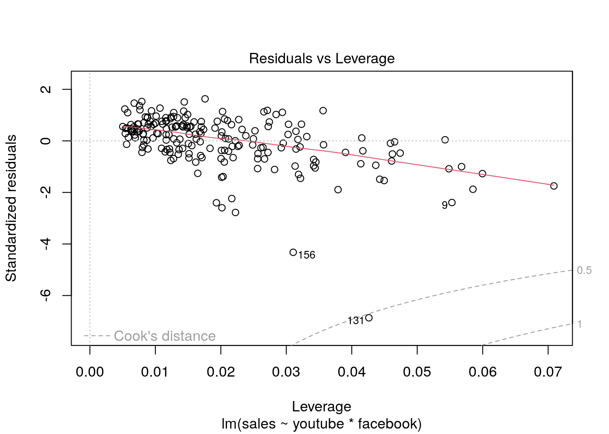
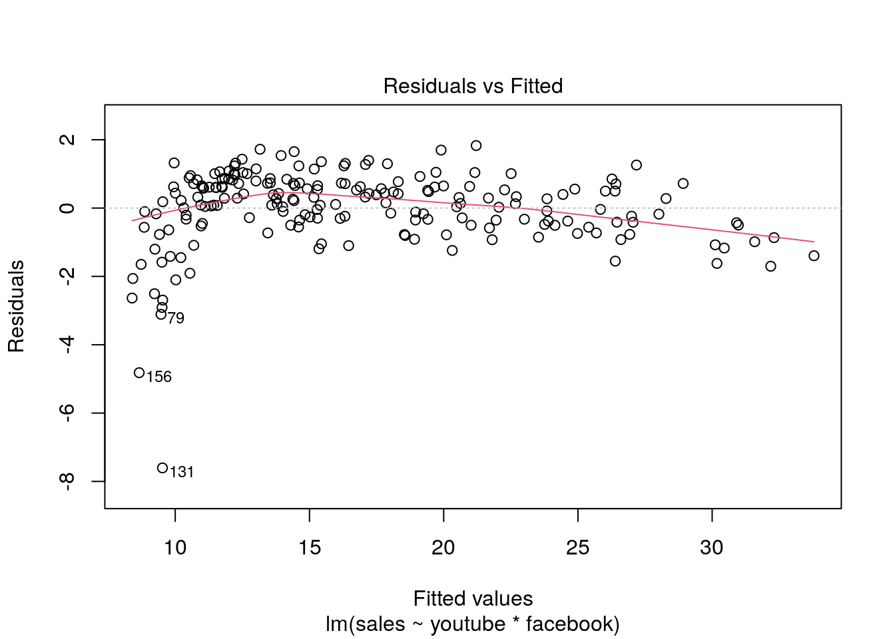

Chapter 3 Linear regression
3.1 Background
- Simplest regression model: \(y=a+bx+error\)
- Additional predictors: : \(y=\beta_0+\beta_1x_1+...+\beta_kx_k+error\)
- Nonlinear models: \(\log y=a+b \log x+error\)
- Nonadditive models: \(y=\beta_0+\beta_1x_1+\beta_2x_2+\beta_3x_1x_2+error\)
- Generalized linear models: Non-normal additive errors with a function that “links” the linear predictor with the outcome.
3.2 Simple regression with fake data
Same as Chapter 2
x=1:20
n=length(x)
a=0.2
b=0.3
sigma=0.5
y=a + b*x + sigma*rnorm(n)fit=lm(y~x)
summary(fit)##
## Call:
## lm(formula = y ~ x)
##
## Residuals:
## Min 1Q Median 3Q Max
## -1.46189 -0.19521 0.05332 0.33945 0.90045
##
## Coefficients:
## Estimate Std. Error t value Pr(>|t|)
## (Intercept) 0.07808 0.28443 0.275 0.787
## x 0.30694 0.02374 12.927 1.51e-10 ***
## ---
## Signif. codes: 0 '***' 0.001 '**' 0.01 '*' 0.05 '.' 0.1 ' ' 1
##
## Residual standard error: 0.6123 on 18 degrees of freedom
## Multiple R-squared: 0.9028, Adjusted R-squared: 0.8974
## F-statistic: 167.1 on 1 and 18 DF, p-value: 1.509e-10| 2.5 % | 97.5 % | |
|---|---|---|
| (Intercept) | -0.5194814 | 0.6756454 |
| x | 0.2570520 | 0.3568192 |
Questions
- Are estimates consistent with true values?
- What can you tell about the uncertainty surrounding the coefficients?
We can also plot the data and fitter regression line (Figure 3.1).
plot(x, y, main="Data and fitted regression line")
a_hat=coef(fit)[1]
b_hat=coef(fit)[2]
abline(a_hat, b_hat)Figure 3.1: Observed and fitted
3.3 Interpretation of coefficients and model diagnostics
Linear regression assumptions
- Normality of residuals.
- Linear relationship.
- Constant variance.
- \(y_i\) are independent.
Let’s start using real data. Below we can see a brief description about the dataset used in this example.
install.packages("datarium") # Install to access the dataset
?marketing #description of the dataset
library(datarium)
head(marketing)| youtube | newspaper | sales | |
|---|---|---|---|
| 276.12 | 45.36 | 83.04 | 26.52 |
| 53.40 | 47.16 | 54.12 | 12.48 |
| 20.64 | 55.08 | 83.16 | 11.16 |
| 181.80 | 49.56 | 70.20 | 22.20 |
| 216.96 | 12.96 | 70.08 | 15.48 |
| 10.44 | 58.68 | 90.00 | 8.64 |
We build a model to predict sales on the basis of advertising budget spent in youtube and facebook. It is important to notice the nonadditive model used here and the implications of interaction terms.
fit2=lm(sales ~ youtube*facebook, data = marketing)
summary(fit2)##
## Call:
## lm(formula = sales ~ youtube * facebook, data = marketing)
##
## Residuals:
## Min 1Q Median 3Q Max
## -7.6039 -0.4833 0.2197 0.7137 1.8295
##
## Coefficients:
## Estimate Std. Error t value Pr(>|t|)
## (Intercept) 8.100e+00 2.974e-01 27.233 <2e-16 ***
## youtube 1.910e-02 1.504e-03 12.699 <2e-16 ***
## facebook 2.886e-02 8.905e-03 3.241 0.0014 **
## youtube:facebook 9.054e-04 4.368e-05 20.727 <2e-16 ***
## ---
## Signif. codes: 0 '***' 0.001 '**' 0.01 '*' 0.05 '.' 0.1 ' ' 1
##
## Residual standard error: 1.132 on 196 degrees of freedom
## Multiple R-squared: 0.9678, Adjusted R-squared: 0.9673
## F-statistic: 1963 on 3 and 196 DF, p-value: < 2.2e-16Also we plot some regression diagnostics.
plot(fit2) 

3.4 Outliers and how to diagnose them
Let’s recall our linear model, i.e., \(y_i=a+bx_i+\epsilon_i,\quad \epsilon_i\sim \mathcal{N}(0,\sigma)\). Why is important to check the outliers after fitting our model? Because sometimes we can encounter potential outliers that could influence the regression model in the sense of pulling our fitted model towards these outliers.
3.4.1 Studentized residuals
After fitting our linear model, we get
\[ y_i=\hat{a}+\hat{b}x_i+d_i \implies d_i=y_i-\hat{y_i} \] where \(d_i\) denotes the residual for observation \(i\) and \(\hat{y_i}=\hat{a}+\hat{b}x_i\). Let’s plot again our fitted values vs residuals in our previous model. How large is large?
plot(fit2,1)
In order to answer the previous question, we standardize our residuals, i.e.,
\[ t_i=\frac{d_i}{sd(d_i)} \] This studentized residuals follow a student’s t distribution, i.e., \(t_i\sim t_{n-p-1}\) where \(p\) is the number of coefficients in our regression model.
Questions
- Why do residuals \(>2\) warrant attention?
3.4.2 Difference in Fits (DFFITS)
Are outliers bad when fitting a linear model? Not necessarily. We can have outliers which are not influential in our fitted model. The idea behind diagnosing influential observations is to delete the observations one at a time, each time refitting the regression model on the remaining \(n–1\) observations.
The difference in fits for observation \(i\), denoted \(DFFITS_i\), is defined as:
\[ DFFITS_i=\frac{\hat{y_i}-\hat{y}_{(i)}}{sd(\hat{y_i}-\hat{y}_{(i)})} \] where \(\hat{y}_{(i)}\) denotes the fitted response when observation \(i\) is removed. Going back to our previous example, Figure 3.2 shows how influential our observations can be
plot(dffits(fit2))Figure 3.2: DFFITS
\(DFFITS_i\) can also be expressed as
\[ DFFITS_i=t_{(i)}\sqrt{\frac{h_{ii}}{1-h_{ii}}} \]
where \(t_{(i)}\) is the externally studentized residual and \(h_ii\) represents the leverage. The leverage \(h_ii\) is a measure of the distance between the \(x\) value for the \(i\)th data point and the mean of the \(x\) values for all \(n\) data points. For a perfectly balanced experimental design, the leverage for each point is \(p/n\), therefore
\[ DFFITS_i=t_{(i)}\sqrt{\frac{p}{n}} \]